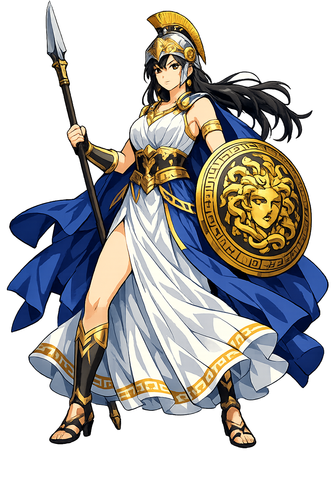

The Authentic Orthography
Wisdom, War Strategy, Crafts · The Grey-Eyed Strategist · Patron of Athens

Unicode restoration and ASCII comparison
Ἀθηνᾶ
The name in its original Greek form. Athēnâ (Ἀθηνᾶ) is attested in the source tradition — “Unknown; possibly pre-Greek”. Its aspirated consonants, long vowels, and acute accents carry the full phonetic and orthographic weight of the source tradition.
athena
Reduced to plain athena, the name loses everything that made it specific: aspirated consonants, long vowels, and acute accents. What remains is an ASCII string that machines can parse but that no longer speaks with its original voice.
Athēnâ
The Unicode restoration recovers what ASCII flattened. Athēnâ restores aspirated consonants, long vowels, and acute accents, returning the name to its original written dignity. The domain encodes to Punycode, but the browser displays the truth.
Athēnâ.com → xn--athn-eoa60a.com
The non-ASCII characters in Athēnâ are encoded while the ASCII remains visible. To the DNS, it is Punycode. To humanity, it is Athēnâ.
How Athēnâ travels from ancient script to the modern URL
Greek Ἀθήνα; the etymology is unknown and possibly pre-Greek. A traditional folk-etymology connects it with Ἀθήνη “mind, craft".
Wisdom, War Strategy, Crafts
The Unicode restoration Athénā preserves Greek stress and length; the ASCII form athena loses these features.
Owned, ideal, and ASCII forms of Athēnâ
Athēnâ
Restores Ἀθηνᾶ. The live temple domain — athēnâ.com.
Athēnā
Restores Ἀθηνᾶ. A second live spelling — athēnā.com.
athena
Flattens Ἀθηνᾶ. The plain ASCII fallback — what DNS and legacy systems see.
How Athēnâ was spoken
Wisdom, Warcraft, Crafts, and Civilization
Athénā is unique among the Olympians: a warrior who fights only for just causes, a virgin goddess who needs no consort to validate her power, and the patron of the practical arts that make city life possible. She is intelligence made divine.
She favors counsel, discipline, and defensive battle over the berserk fury of Árēs; heroes like Odysseus and Diomedes fight under her sign.
The mind that sees all sides; her advice is practical, ethical, and far-sighted.
Patron of weaving, pottery, carpentry, and olive cultivation — the technologies that sustain the polis.
Polias and Poliouchos: the goddess who protects the citadel and whose olive tree marks the land.
Stories of Athēnâ
Athénā's myths center on intelligence overcoming force. She is born from Zeús's head, defeats Poseidôn by gift rather than combat, and guides the heroes who win by cunning.
Zeús swallowed his pregnant first wife Mêtis, fearing a son who would overthrow him. Later, Hephaistos split Zeús's skull with an axe, and Athénā sprang forth fully armed with a shout that shook Olympus. She is therefore the only Olympian whose parent is purely paternal — intelligence born directly from sovereignty.
The two gods competed to become patron of Athens. Poseidôn struck the Acropolis with his trident and produced a salt spring; Athénā planted the first olive tree. The judges — Cecrops and the Athenian people — chose the olive, because it gives food, oil, and wood. Poseidôn flooded the land in anger, but Athénā's city endured. The myth makes civilization superior to maritime power.
The mortal weaver Arachnê boasted that her skill surpassed the goddess's. Athénā wove a tapestry of the gods' glory; Arachnê wove their scandals. Though flawless, Arachnê's work was impious. Athénā struck her, and in remorse or punishment the maiden hanged herself. The goddess transformed her into the first spider. The myth is a warning: skill without reverence is hubris.
Athénā's favorite mortal is Odysseus, the man of many wiles. She protects him through his wanderings, disguises him on Ithaca, and stands with him against the suitors. Their bond is the closest thing in Greek myth to a partnership between human intelligence and divine wisdom.
Athénā is the goddess of the well-aimed blow — not merely in war, but in speech, craft, and thought. She does not rage; she calculates. She does not seduce; she advises. Her virginity is not a lack but a statement: her power is complete in itself, needing no alliance with masculinity to be effective.
Enter Extended Lore